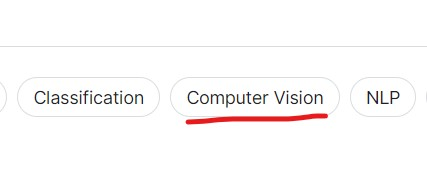

A dataset is structured data often used for machine learning. Our goal is to find an image dataset with classified labels, which we will use for processing and building our model in the future.
Kaggle is a platform for data scientists that allow users to publish their datasets and models.
There is a wide variety of datasets that can be used by beginners as well as by professionals.
As our topic is image classification, we need to choose "Computer Vision".

There are a lot of image datasets, but we have chosen 10 Monkey Species
dataset. The data is only 574 MB, and it was divided into training and validation datasets, so coders will not have to split the data. That is why it is suitable for beginners.